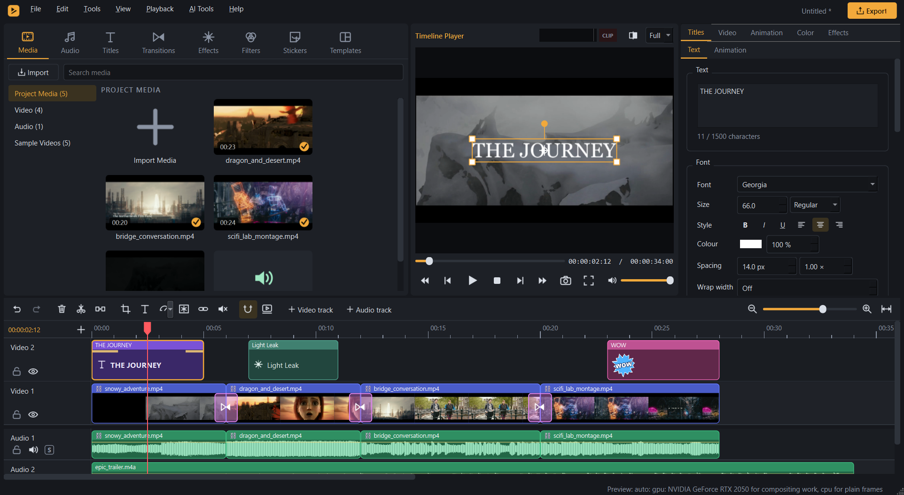
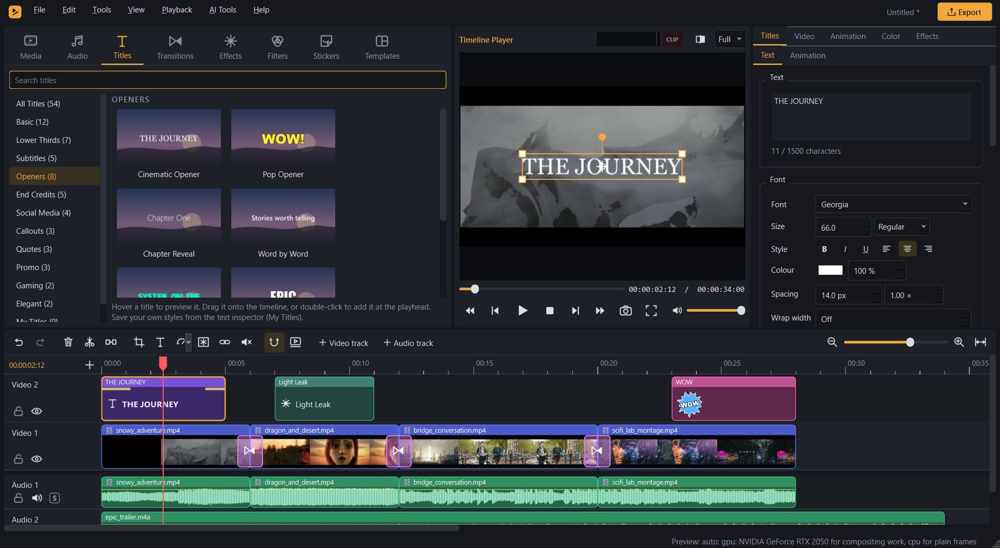
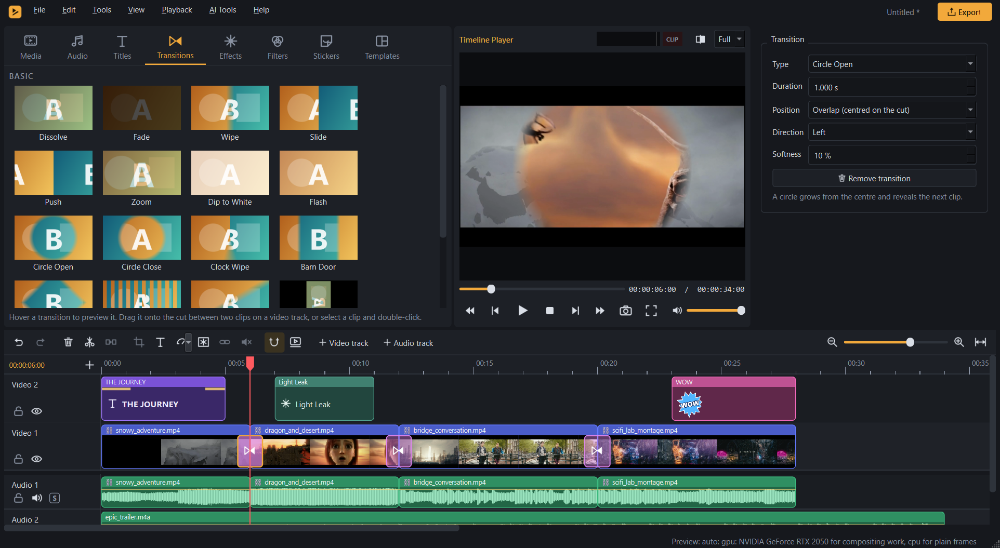
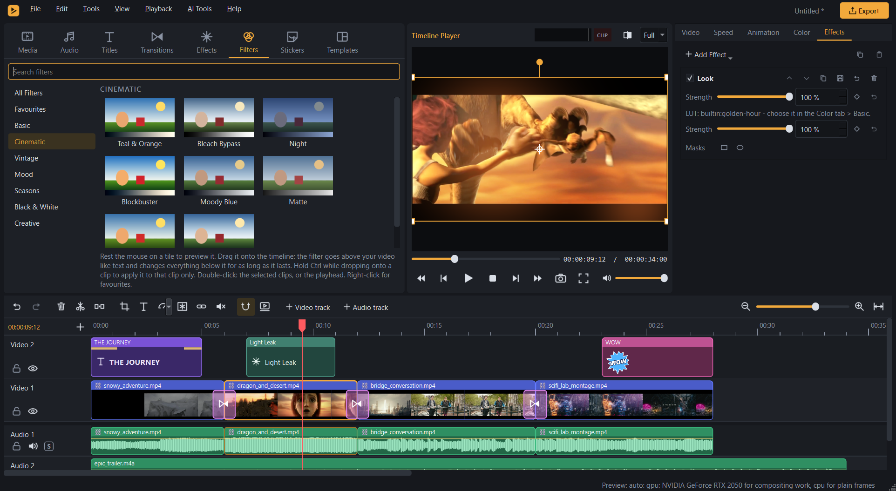
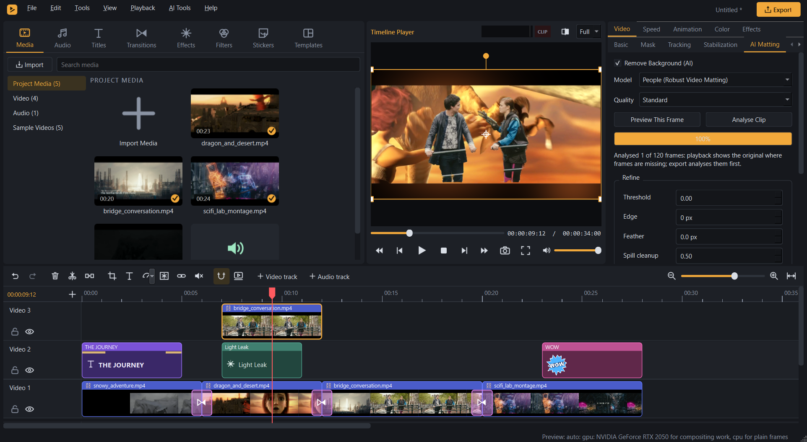

A timeline that works with you
Trim, split, snap and ripple delete across multiple tracks. Keyframes, masks, unlimited undo, autosave and crash recovery keep the edit moving.
A video editor for Windows, with a multitrack timeline, colour tools, and AI that runs on your own PC.

01 / The essentials, and more
Cut a sequence, shape its sound, and give it a look. Familiar editing tools, together in one workspace.
Trim, split, snap and ripple delete across multiple tracks. Keyframes, masks, unlimited undo, autosave and crash recovery keep the edit moving.
Start with 54 title templates and 36 text animations. Style captions, import and export SRT or ASS subtitles, and work with shaped Arabic and right-to-left text.
Use HSL, curves, colour wheels and .cube LUTs. Build your look with 30 effects, 46 filters and 19 transitions.
Mix tracks with volume automation, crossfades, a 10-band EQ, auto ducking, noise reduction and loudness normalisation.
Remove backgrounds, create captions from speech, reframe, interpolate and upscale. Optional models download when you choose them and run locally.
Export MP4, MOV, MKV, WebM, GIF, WAV or FLAC. Use NVIDIA or Intel hardware encoding when available, with a reported CPU fallback.
02 / Inside MeerCut
Actual screenshots from version 1.0.0. Explore the tools in context, from titles to local background removal.




03 / Open by design
MeerCut is an independent project by CodeWithAmeer. Read the code, report an issue, or build your own version. The source and release notes are public on GitHub.
Explore the source04 / Get MeerCut
Choose the installer, or keep it portable. Both include the editor. No additional installation is needed for the portable version.
Installer: 74.4 MB · Portable: 96.3 MB
The downloads are not code-signed. Windows may display a SmartScreen notice. Verify your download against the release’s SHA-256 checksums before running it.
Tested on one laptop: Intel Core i5-12450H, 8 GB RAM, Intel UHD + NVIDIA RTX 2050 (4 GB), Windows 11 Home. This is the test setup, not a published minimum specification.
Version 1.0.0 has no macOS or Linux build, no HDR or alpha-channel video export, and no AMD AMF encoder. It has not been tested on a clean Windows installation or other hardware. AI upscaling can be slow, and model licences vary; the commercial-use status of some weights is unclear.